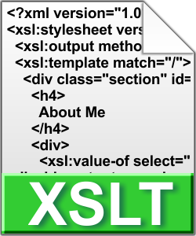

Experienced User Interface Designer and User Experience Consultant. Platforms include Google Android Applications, Apple iOS Applications, and scalable Web Applications and Websites.
Built, consulted, and Troubleshot Web Services, API's, and backend services. Created and configured intertactions to and from databases using NRQL, WQSL, and WDQL.
Maintained and uplifted Microsoft Outlook Exchange servers and Active Directory servers, trouleshot printers, Apple and PC computers, wireless devices, WiFi routers and servers, build high-performing desktop computers.


Freelancer is a free bootstrap theme created by Start Bootstrap. The download includes the complete source files including HTML, CSS, and JavaScript as well as optional SASS stylesheets for easy customization.

Freelancer is a free bootstrap theme created by Start Bootstrap. The download includes the complete source files including HTML, CSS, and JavaScript as well as optional SASS stylesheets for easy customization.
Freelancer is a free bootstrap theme created by Start Bootstrap. The download includes the complete source files including HTML, CSS, and JavaScript as well as optional SASS stylesheets for easy customization.
Freelancer is a free bootstrap theme created by Start Bootstrap. The download includes the complete source files including HTML, CSS, and JavaScript as well as optional SASS stylesheets for easy customization.